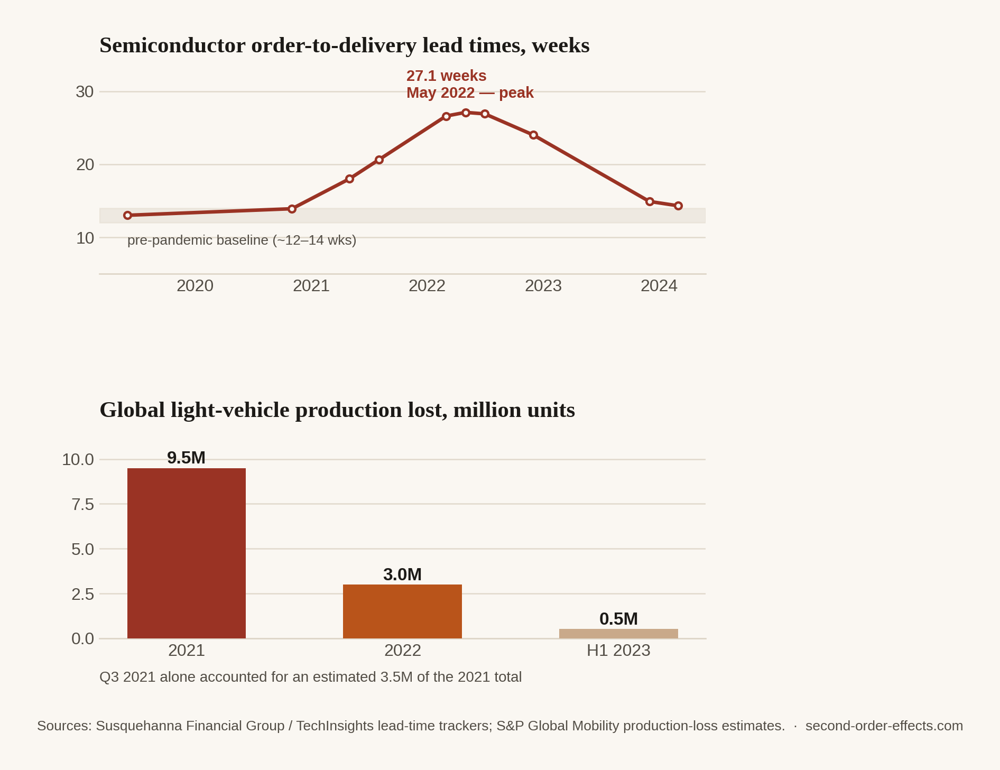

Three Million Cars That Weren't Built: Notes on the Chip Shortage
A component that costs a few dollars idled car factories worldwide for two years running, and quietly rewired showroom waitlists, used-car prices, and dealer margins in the process.
Of everything on this site, the global chip shortage is my favourite case study, because the first-order cause is almost embarrassingly boring and the second-order consequences are wildly out of proportion to it. No war, no rate decision — just a semiconductor, often worth a few dollars, that automakers ran short of starting in 2020 and kept running short of well into 2022 and beyond.
How a boring component became the bottleneck
When the pandemic hit in 2020, carmakers did the textbook-rational thing: they braced for collapsing demand and cancelled their chip orders. Chip foundries, running flat out, simply reallocated that freed-up capacity toward consumer electronics — laptops, gaming consoles, home electronics — as pandemic-era demand for those categories spiked instead. When car demand recovered far faster than anyone modelled, automakers went back to place chip orders and discovered they were now standing at the back of a very long line, behind an industry that had already claimed the capacity they used to consider theirs.
The order-to-delivery lead time for a chip, which ran three to four months before the pandemic, stretched past a year at the worst of it. Median semiconductor inventories — the buffer stock that normally lets an industry shrug off small disruptions — fell from about 40 days in 2019 to under five days in 2021. There was, in any practical sense, no slack left anywhere in the system to absorb a shock like this one.

The scale of it
The production hit was enormous relative to how small the missing part actually was. Global light-vehicle production lost more than 9.5 million units in 2021 alone because of the shortage, with the single worst quarter — Q3 2021 — accounting for an estimated 3.5 million of those units on its own. Roughly 3 million more units were affected in 2022. Estimates put the potential financial hit to automakers at up to $110 billion in 2022, stacked on top of losses already absorbed the year before. It took until around mid-2023 for industry analysts to start calling the shortage "mostly over."
The part that failed was worth a few dollars. The vehicles it stopped from being built were worth tens of thousands each. That ratio — a tiny point of failure with an enormous multiplier — is what makes supply chain second-order effects so different from a price shock. It isn't about cost. It's about a missing link breaking an entire chain.
Where this actually landed
The consequences that reached ordinary buyers weren't subtle. New car waitlists stretched into many months. Manufacturers quietly prioritised their highest-margin trims over base versions — if you can only build a fraction of your normal volume, you build the profitable fraction. Buyers who couldn't wait moved into the used-car market instead, pushing used prices up sharply almost everywhere, including, anecdotally, in Singapore's already-expensive car market, where a shortage of new inventory piled another layer of pressure onto a system already constrained by COE quotas.
I didn't buy a car during this window, but I spent a chunk of an internship building forecasting models to project resource requirements and performance outcomes for exactly this kind of question — whether a supply constraint upstream would still be biting six or twelve months out, and what that meant for decisions made much further down the chain. The chip shortage is the case study I keep returning to when I explain that work, because it's such a clean example of the underlying problem: a small, boring input with almost no redundancy built around it. What makes it useful, as a case study, is precisely that it shows second-order effects don't require a dramatic first-order cause. A pandemic-era inventory decision, with zero geopolitical drama attached to it, still managed to reshape a global industry for the better part of three years.
Sources
- Federal Reserve Bank of Cleveland — semiconductor shortages and vehicle production/prices
- S&P Global Mobility — the chip shortage is mostly over for the auto industry
- Federal Reserve Bank of Chicago — why the automotive chip crisis isn't over yet (2022)
- Manufacturing Tomorrow — implications of the chip shortage for auto manufacturing
- Chart data compiled from Susquehanna Financial Group / TechInsights semiconductor lead-time trackers and S&P Global Mobility production-loss estimates.
Comments